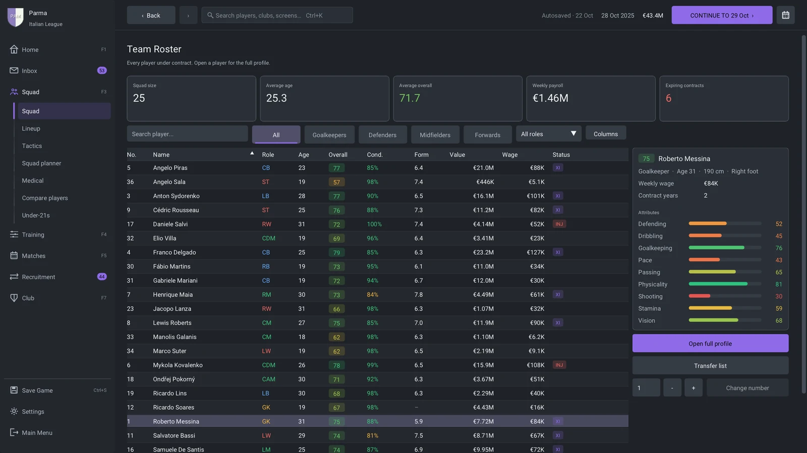
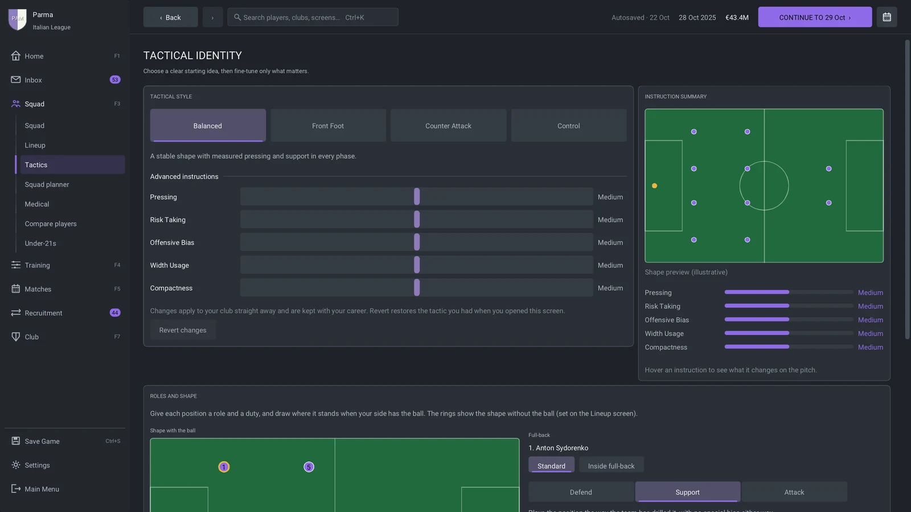
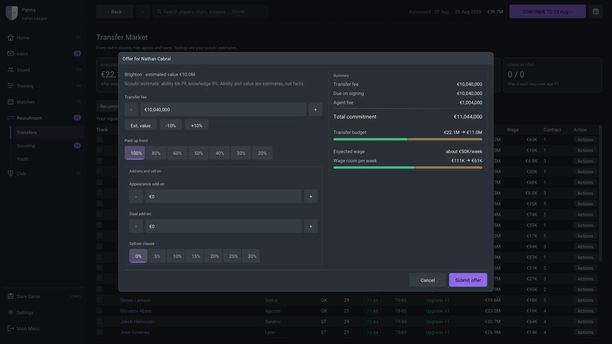
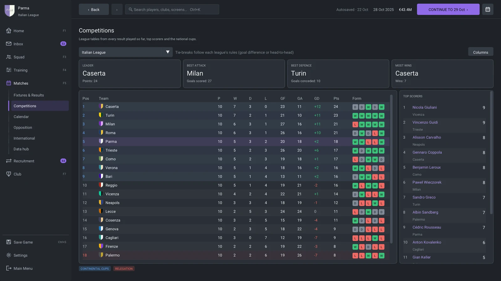
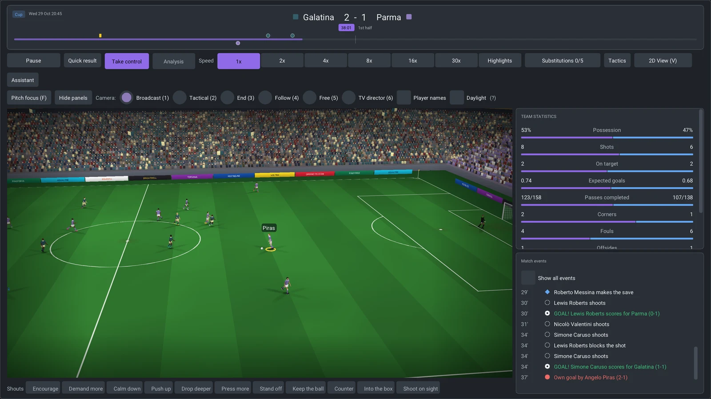
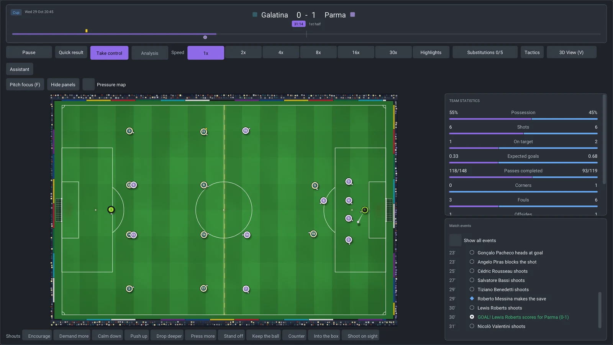
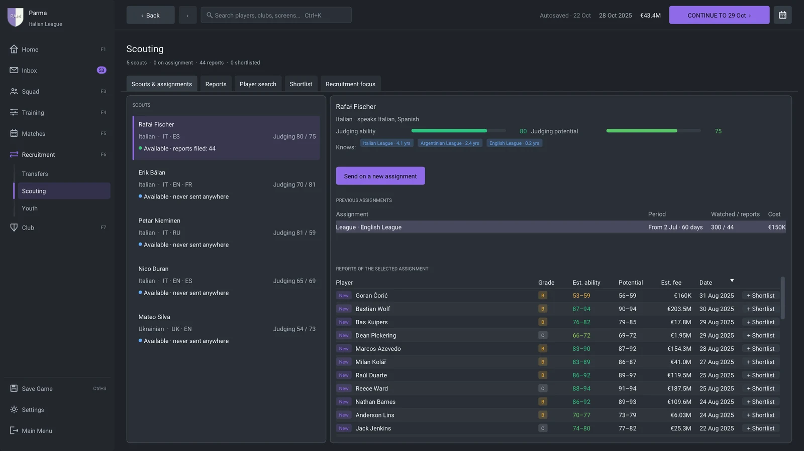
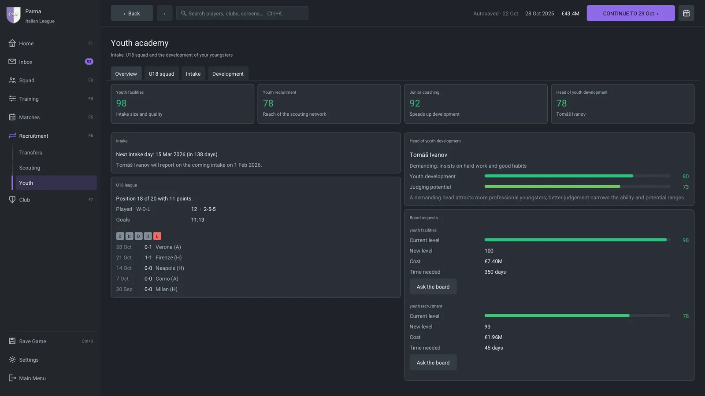

On this page
Feature tour
Management
- One management shell with seven sidebar hubs, F1-F7 shortcuts and a command palette (Ctrl+K) that finds players, clubs, screens and pending tasks; browser-style Back and Forward (touchpad swipe, mouse side buttons, Alt+Left/Right).
- A Home dashboard with the next fixture and a Next steps card, and an inbox that separates decisions from information, lets you act inline and filters by player or club; decision moments such as a disputed fine or a fans' protest about ticket prices.
- A world news hub, cup and continental draw ceremonies, and a career timeline you can export as a journal.
- Continue advances the calendar on a background worker and can be stopped at the end of a day; holiday mode hands the club to your assistant until a date, a match or a decision.
- Delegation of lineup fixes, substitutions, training, renewals, scouting, friendlies and youth contracts to the assistant manager.
- A welcome tour, a first-week checklist, and a Help screen (F8) with the shortcuts and a football glossary.
- English and Italian with locale-aware money, six themes, colour-vision modes, text size and interface scaling for HiDPI displays, layouts that adapt from 1280x720 to 4K, and keyboard shortcuts you can rebind.
Match day
- A real-time engine with player movement and fatigue, ball flight with drag, bounce and roll, goalkeeping, dribbling, tackles, marking and pressing.
- The laws of the game: offside, fouls and advantage, yellow and red cards, free kicks, penalties, corners, throw-ins, goal kicks and added time.
- 2D and 3D views of the same match, speeds from 1x to 30x, a Highlights mode and a Quick result button; six 3D cameras including a TV director, with mouse orbit, pan and zoom, animated players, and a day-lit stadium for afternoon kick-offs.
- Play mode: take control of your team on the pitch with the keyboard or a gamepad, one footballer at a time, under the same rules, attributes and fatigue as a watched match.
- Player roles and duties for every position, and a separate shape with the ball that you drag into place on the tactics screen.
- A substitutions board, an in-match tactics panel and eleven touchline shouts; pre-match and half-time team talks that the players carry onto the pitch.
- Opposition reports with individual instructions the engine plays out: tight marking, closing down, showing a player onto his weaker foot or doubling up on him.
- Cup ties played to a winner through extra time and a live penalty shootout; match reports with expected goals, shot maps, touch maps and pass networks, and half-time and full-time analysis.
- Procedural match sound: crowd, whistles and ball contacts.
Competitions
- 22 leagues in eleven countries, each with a top and a second division, promotion and relegation, and a domestic cup.
- Continental club competitions with Swiss-style league phases, two-legged knockout rounds, prize money and coefficients.
- National teams with qualifiers, finals tournaments, friendlies and call-ups of your players.
- League tables with clinch marks, archived seasons, a data hub with league leaders, and an end-of-season review with the board's verdict.
The club and the world
- Finances with TV, merit, gate and commercial income, wage and staff budgets, a ledger, ticket pricing, parachute payments and transfer budgets tied to real cash.
- Board objectives for the league, the cup, the finances and young players; confidence, warnings, dismissal, transfer embargoes and facility projects. Supporter mood that the board listens to.
- Injuries and a medical centre with load charts, rest and minute limits; fatigue, sharpness, morale and form; player development driven by age, training, minutes and staff.
- Squad status, captains, set-piece takers and squad numbers, a squad planner and player comparison; player conversations, promises and dressing-room stories.
- Coaching, medical, scouting and youth staff; weekly training plans and mentoring groups.
Transfers, scouting and youth
- Transfer search with affordability filters and need-based recommendations, and transfer windows that follow each country's calendar.
- Negotiations with counter-offers, instalments, add-ons and sell-on clauses, loans in both directions, pre-contracts, free agents and release clauses; agents who talk back; bids for your own players that you can negotiate too.
- Scouts with nationalities, languages and regional experience. Players outside your club are shown as estimates whose ranges narrow as your knowledge grows.
- A yearly youth intake with a February preview and a March intake, an under-18 league, scholarships and first professional contracts; an under-21 squad for every club with its own league.
Career
- A manager profile with reputation and coaching licence, a job centre, interviews, offers from other clubs, resignation and sacking. You can start unemployed.
- National-team jobs, alone or next to your club job: pick the squad for each international window and qualify for the finals.
- Monthly and season awards, player honours, and club and league records.
- Three save slots, autosave and restorable backups. The game plays on an in-memory copy and only replaces a save with a verified snapshot; a save that does not load can be restored from its newest good backup, and a crash leaves a report on your computer (nothing is sent anywhere).
The changelog has the complete list.
Screenshots
 |  |
| Squad: the first team with a player's details beside the list. | Tactics: styles, instructions, roles and the shape with the ball. |
 |  |
| Transfers: an offer for another club's player. | Competitions: league tables, cups and continental football. |
 |  |
| Match day in 3D: the broadcast camera. | Match day in 2D: the tactical view of the same match. |
 |  |
| Scouting: scouts, assignments and reports. | Youth academy: facilities, the under-18 league and the next intake. |